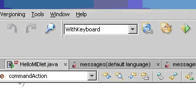
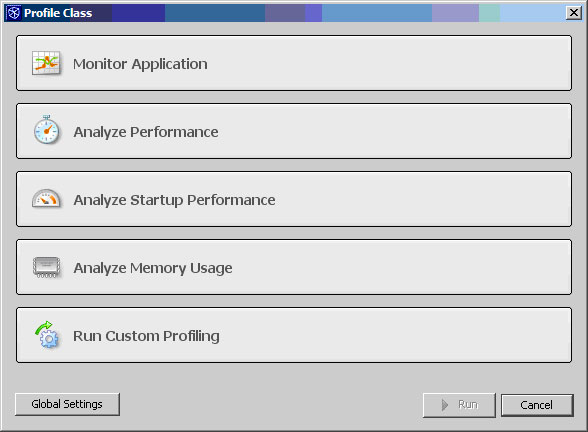

この記事は、3 つの記事から成るシリーズの一部です。
概要:
Java アプリケーションは携帯電話やインタラクティブテレビ上で動作可能です。これらは Java にとっての理想郷です。Sun は J2ME の開発キットを提供しています。これを NetBeans に組み込むには、モビリティーキットをインストールします。
これを入手するには、Web アドレス https://netbeans.org/kb/trails/mobility.html にアクセスします。
これにより、J2ME のテンプレート、ライブラリ、およびエミュレータが得られます。
モビリティープラグインのさまざまな機能を調べられるように、ここではテンプレートプロジェクトを使用します。
「ファイル」->「新規プロジェクト」(Ctrl-Shift-N キー) を選択します。
サブカテゴリ「モバイル」->「モバイルアプリケーション」を選択します
「次へ」をクリックし、プロジェクトの名前を「MyJ2ME」にします。
すべての選択肢をデフォルトのままにして「完了」をクリックします。
次の要素を備えたテンプレートクラスを NetBeans が使用したことがわかります。
プロジェクトを実行すると、携帯電話エミュレータ内でプロジェクトが起動されます。
複数の構成を作成すると、プロジェクトをさまざまな文脈で使用できます。

NetBeans の次のバージョンで提供される主要機能の 1 つは、Sun Application Server 8.1 との統合です。さらに、EJB や Web サービスのサポートが追加されます。これらの機能はまだ高価な IDE に限られています。
このプラグインの目的は、IDE のワークフローに緊密に統合された、強力で柔軟なプロファイルソリューションを提供することです。これを使用することで、Java ソフトウェアの実行中にその「オーバーヘッドビジョン」を把握できます。
これは 2005 年 4 月にリリースされる予定ですが、機能の一部がすでに Beta 版で使用可能です。
これをテストする場合:
通知:
Beta 版では 1.4 の Java 仮想マシンを使用する必要があります。したがって、手元に 1.5 がある場合は、コンパイラで「-source 1.4」引数を選択するか、1.4 をインストールします。筆者のコンピュータでは 2 番目の項目のみが完了しました。
いくつかのスクリーンショットを次に示します。

NetBeans には、C/C++、Fortran などのほかの言語、さらには UML さえもサポートする広範な「プラグイン」が用意されています。アプリケーションのパフォーマンスのテストを可能にするプロファイラもリリースされています。これらについてはここで説明しないので、皆さん自身でそれを行ってみてください。ただし、ほとんどのプラグインは NetBeans の 3.6 リリースで使用可能なものであり、それらをバージョン 4 で使用することはできません。これが近いうちに解決されることを期待します。
プラグインの一覧: http://plugins.netbeans.org/
利点:
欠点:
NetBeans は、プロジェクトの難しい部分や二次的な部分を肩代わりすることにより、プログラマが非常に容易に開発できるようにします。NetBeans を使用すれば、時間や費用を節約し、心を解放できます。その結果、コードに簡単に集中できます。
リンク:
http://www.netbeans.org: NetBeans の公式 Web サイト
http://java.sun.com: Java の公式 Web サイト。ここでは、NetBeans を Java 統合バンドルとしてダウンロードできます。
{kind=link}
{kind=link}
{kind=link}